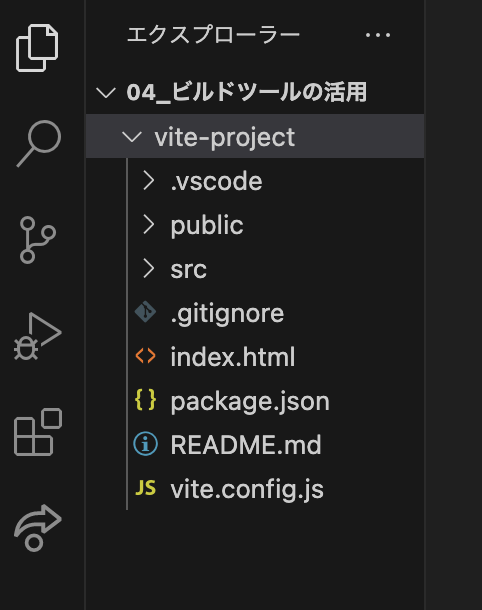

1. 復習
1-1. Vue プロジェクトの生成
- プロジェクト用のフォルダをVSCodeで開く。
- 以下のコマンドを入力して「Enter」。
npm init vue@latest - 順番に質問に答えていく。（全て「Enter」でOK）
- インストールに成功すると、最初に選択した名前のフォルダの中にたくさんのデータが生成される。

- 以下のようにターミナルに表示されるので、1行ずつ入力し「Enter」。
cd vite-project → フォルダを移動 npm install → 必要なパッケージをインストール npm run dev → 開発環境を立ち上げる - 表示されたURL（http://localhost:5173/）にアクセス。
- 動作確認をして完了！
1-2. コンポーネントの作り方
- 『src > components』フォルダに新規ファイル「OneSection.vue」を作成。
- 以下のコードを記述し保存。
<!-- OneSection.vue --> <template> <section class="box"> <h2>ひとつのコンポーネント</h2> </section> </template> <style scope> // scopeをつけることでコンポーネント内のみでCSSが反映される .box { border: 1px solid #f00; margin: 10px; } </style> - ファイル「App.vue」を開き、中身を全て削除する。
- 以下のコードを記述し保存。
<!-- App.vue --> <script setup> // setupは必ずつける（おまじない） import OneSection from './components/OneSection.vue'; </script> <template> <h1>コンポーネントの基礎</h1> <OneSection /> </template> <style scoped> </style>
1-3. Vue プロジェクトのビルド
このままでは本番環境（ネット上）にアップできないので、以下の手順でビルドする。
- 相対パスでビルドされるように「vite.config.js」を以下のように修正する。
import { fileURLToPath, URL } from 'node:url' import { defineConfig } from 'vite' import vue from '@vitejs/plugin-vue' // https://vitejs.dev/config/ export default defineConfig({ plugins: [vue()], base: "./", // 追加 resolve: { alias: { '@': fileURLToPath(new URL('./src', import.meta.url)) } } }) - 「control + c」で開発環境を終了し、以下のコマンドを入力して「Enter」。
npm run build - 「dist」フォルダが生成されたことを確認し、LiveServerでブラウザに表示。